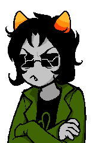

Welcome to Tete's Page

Status!
I decided to put this little window here so I can talk more directly to page visitors! Here I'll comment about what I'm currently working on.
I'm someone who worries about accesibility, so I spent a while making the light mode toggle you see up there, now that it's working across all pages I have two (2) main ideas: the first is making a spanish translation of this website and the second is making some blogpost/tutorial type thing where I outline a lot of common mistakes/bad habits I see people make on their websites. If you are interested you should leave me a comment on neocities, I'll happily read it!
Buenas noches
Hi and welcome to my page. I'm mate/Tete a 19 yo CS student from Chile. Because of my career I took an interest in building my very own page to link my future and current projects (mostly university things)
My interest include:
- Coding
- Web design
- Baking and Cooking
- Rpg's
This is my first time making a proper page so most things you'll see here only exist because I learnt them and thought they looked cool (like hyperlink hover effects). I did my best to make so it doesn't look horrible on mobile and it seems I did a pretty well.
Anyways, I'll keep updating this page and uploading everything related to it to my github (take whatever you want from it!). My socials page is coming along well, make sure to check it out!